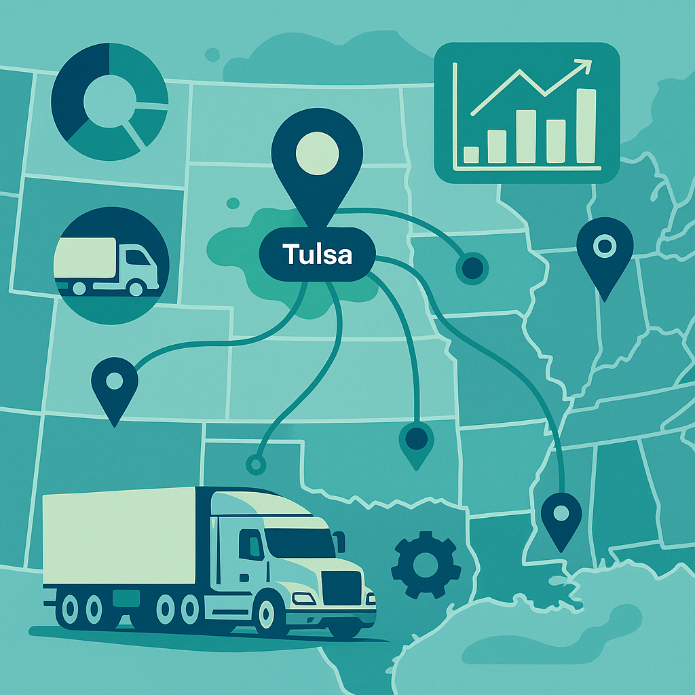
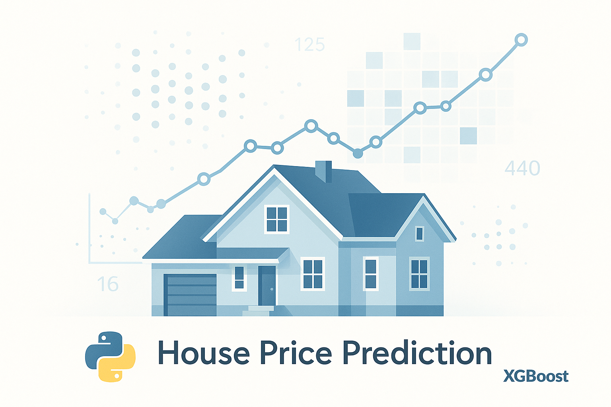
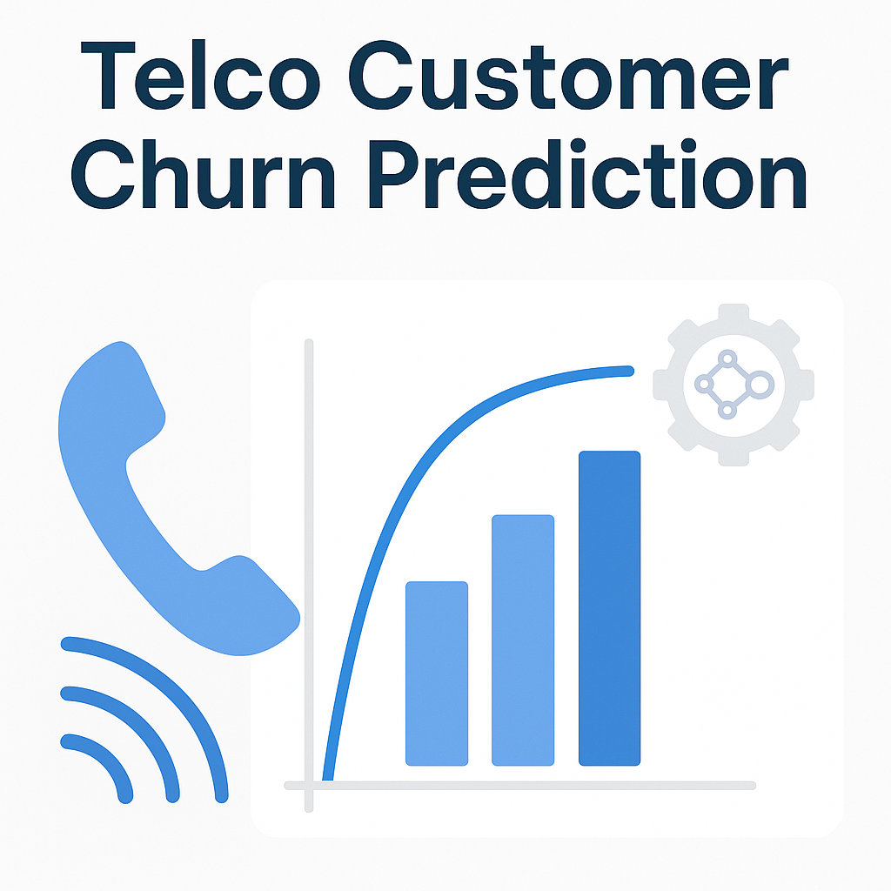
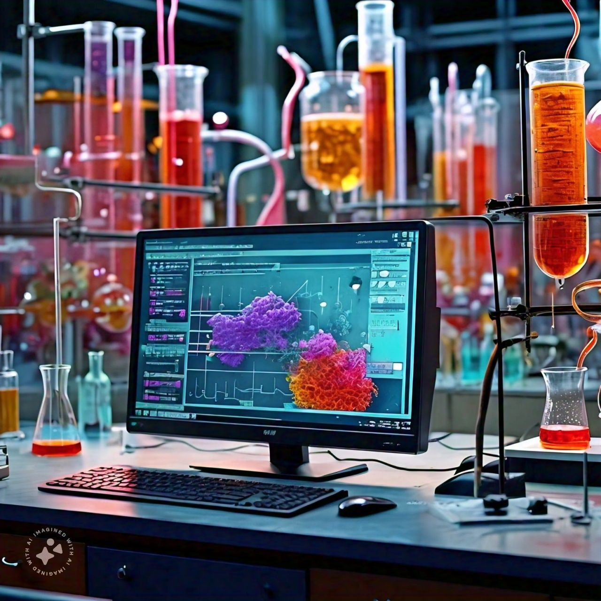
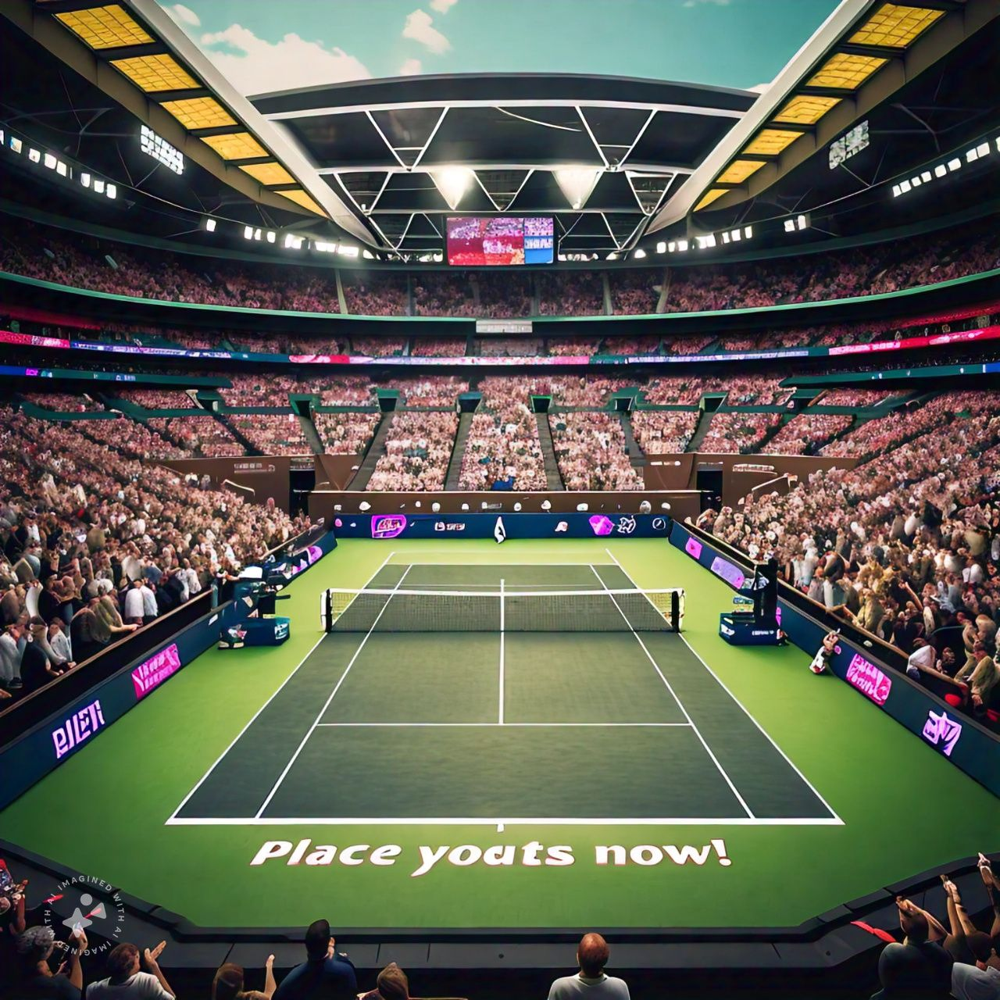

Projects

NYU Faculty Promotion: Data Analytics & Visualization ($15K Raise)
End-to-end data analytics for an NYU faculty member’s promotion, including advanced data cleaning, EDA, custom Excel dashboards, and stakeholder-driven reporting.
Delivered actionable insights from messy, incomplete datasets—directly contributing to a successful promotion and a $15,000 raise.

US Logistics Data Transformation & Optimization
Led data transformation and delivery optimization for a 300-truck fleet in Tulsa, OK.
Rebuilt 5 years of fragmented Excel/CSV data (100K+ rows) with Python and SQL, engineered new features, and built Power BI dashboards. Uncovered actionable insights that enabled $50K/year in savings, improved data quality, and guided executive order policy decisions.

House Price Prediction: Ames Housing (XGBoost Regression)
Built a robust house price prediction model on the Ames Housing dataset using advanced EDA, feature engineering, and XGBoost.
Project highlights the real-world complexity of predictive modeling—balancing performance, data quality, and creative experimentation.
Smart City Data Strategy: Campo Belo, Brazil
Led the design of a comprehensive data management and analytics strategy for a Smart City initiative in Campo Belo, Minas Gerais. Delivered ELT pipelines, hybrid data modeling, and GDPR-compliant governance, laying the foundation for real-time analytics in urban mobility, public safety, and energy. Designed with phased implementation—starting in small neighborhoods and scaling to the entire city over the next decade.

Telco Customer Churn Prediction (XGBoost & EDA)
End-to-end analysis and predictive modeling for a California telecom using Python.
Combined advanced EDA, detailed feature engineering, and XGBoost classification (93% accuracy, ROC-AUC 0.98) to reveal why customers leave.
Interpreted model results with SHAP, delivering actionable business recommendations to reduce churn.
NBA Champions' DNA Analysis
(Ongoing...) Analysis of NBA championship teams' performance using advanced EDA, machine learning, SQL, and Tableau dashboards to reveal the hidden patterns behind winning rosters.

Bayesian State Estimation in Biochemical Processes
Evaluating Bayesian estimators for biochemical process optimization using Python, Matlab, and statistical modeling, producing actionable insights for process control.

Automating Tennis Odds Collection
Automated extraction of tennis betting odds using Python, image processing, OCR, and statistical models to fuel predictive analytics.